| Hitos por período y categoría | ||||||
|---|---|---|---|---|---|---|
| Período | Eventos | Externo | Institucional | Leyes | Otros | Programas |
| 1990–2005 · Pre-MAS | 4 | 0 | 1 | 8 | 0 | 1 |
| 2006–2019 · Era Morales | 4 | 0 | 9 | 11 | 1 | 2 |
| 2019–2025 · Áñez + Arce | 5 | 4 | 3 | 5 | 0 | 2 |
| Fuente: Gaceta Oficial + Lexivox + medios bolivianos + think tanks. 61 hitos validados. | ||||||
Política agropecuaria 1990-2025
61 hitos legales, institucionales y eventos críticos
Documentamos 61 hitos de política agropecuaria boliviana entre 1990 y 2025: 24 leyes, 13 actos institucionales, 14 eventos políticos, 5 programas emblemáticos y 4 shocks externos. Cada hito tiene fecha exacta, fuente primaria, contexto narrativo de 150–300 palabras, imagen ilustrativa con licencia Creative Commons y vínculo al panel cuantitativo del estudio.
Composición de los hitos
Densidad histórica de hitos
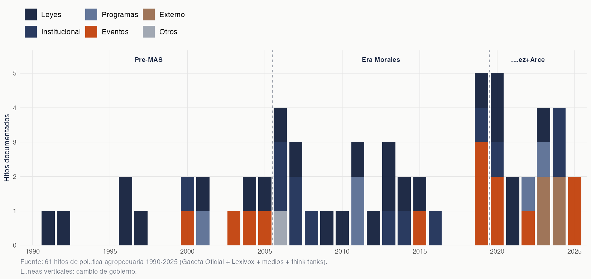
La densidad legislativa no es uniforme. Tres concentraciones destacan:
- 2006-2007: arranque del proyecto MAS — creación del MDRyT, del PND 2006-2011, de EMAPA y del BDP. Reforma agraria (Ley 3545).
- 2010-2014: período de máxima producción legislativa sectorial — Madre Tierra (071, 300), Revolución Productiva (144), Servicios Financieros (393), Alimentación Escolar (622), Agenda Patriótica.
- 2019-2024: sucesión de eventos políticos y shocks — incendios Chiquitanía 2019, crisis post-electoral, COVID-19, OGM 2020, Censo 2022, crisis divisas, incendios Amazonía 2024.
Patrón temático: heatmap año × categoría
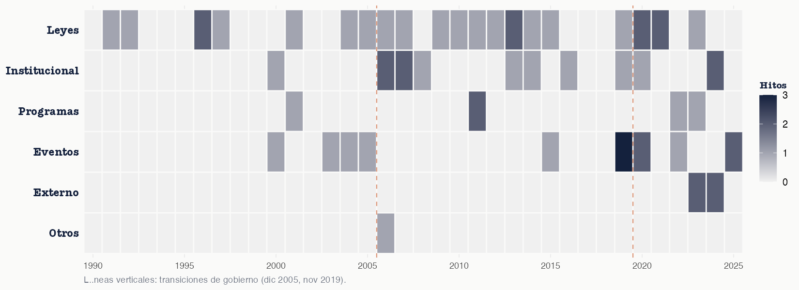
El heatmap revela dos patrones temporales que las tablas no muestran tan bien:
- Las leyes se concentran en bloques: 1996-1997 (reforma neoliberal), 2010-2013 (Madre Tierra y revolución productiva), 2020-2023 (Áñez + Arce gestionan vía decreto).
- Los eventos políticos y externos se concentran en momentos de transición: 2003 (Octubre Negro), 2019 (Chiquitanía + crisis post-electoral), 2024 (incendios Amazonía + escasez combustibles).
Distribución por época política
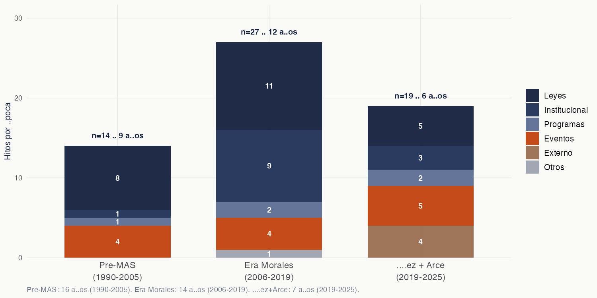
Tres lecturas estructurales:
- La era Morales concentra el mayor número absoluto de hitos institucionales y de leyes — coherente con un proyecto de transformación estatal del sector.
- El período Áñez + Arce muestra alta intensidad de eventos externos (4 de 14 totales del estudio) — refleja el ciclo de turbulencia 2019-2024.
- Los programas emblemáticos (PAR, CRIAR, EMPODERAR, MIAGUA) se concentran post-2010 — el aparato programático del MDRyT se consolida solo en la segunda fase del MAS.
Línea de tiempo interactiva
Cómo navegar
- Usa la barra inferior para moverte por las décadas; click en un hito lo despliega arriba.
- Las flechas del teclado (← →) avanzan entre hitos.
- Cada tarjeta incluye descripción 150–300 palabras, fuente primaria, una fuente secundaria y, cuando existe, imagen ilustrativa de Wikimedia Commons (CC).
Galería visual de hitos
1990–2005 · Pre-MAS · 14 hitos
1991
Ley 1178 SAFCO — administración y control gubernamental
Leyes
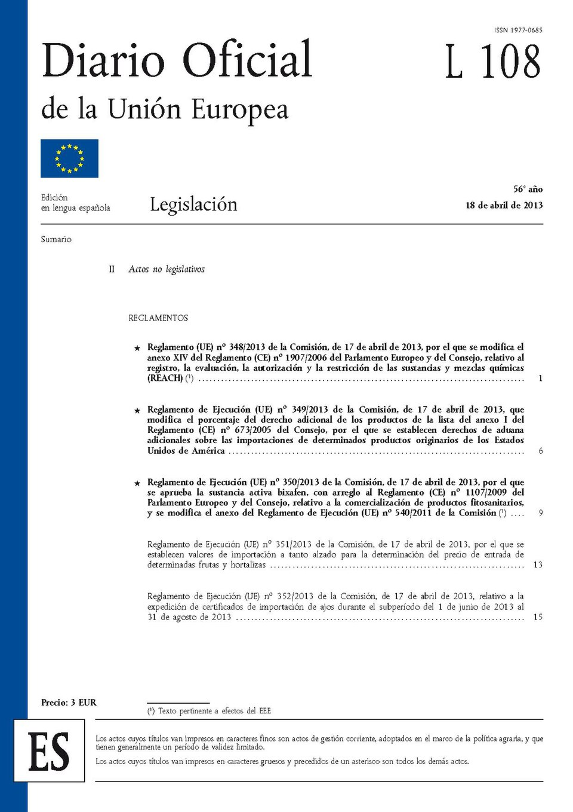
1992
Ley 1333 del Medio Ambiente
Leyes
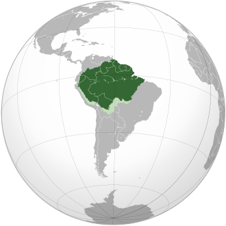
1996
Ley Forestal 1700
Leyes

1996
Ley INRA 1715 — Reforma Agraria moderna
Leyes
1997
Ley 1770 de Arbitraje y Conciliación
Leyes
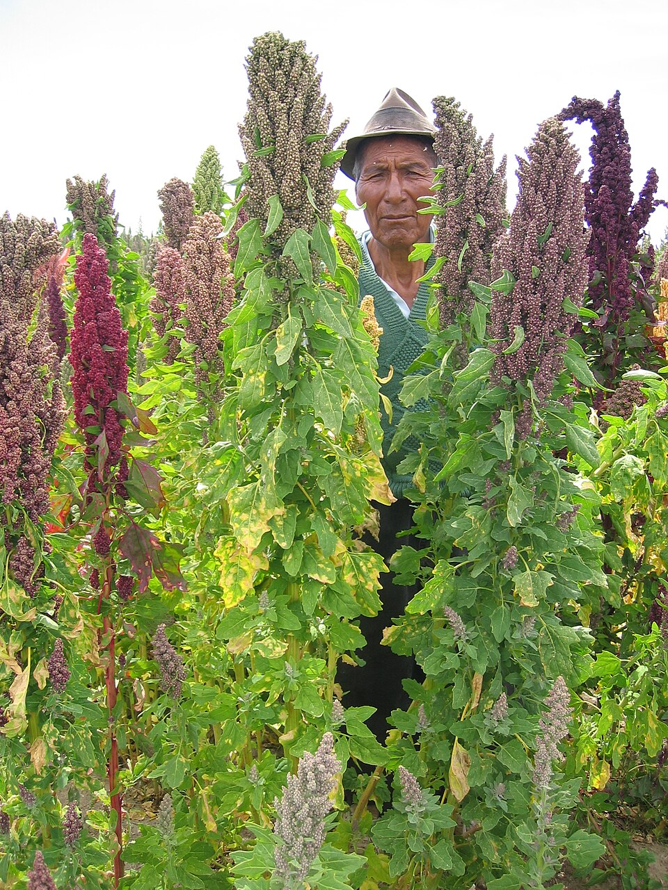
2000
Ley 2061 — creación del SENASAG
Institucional
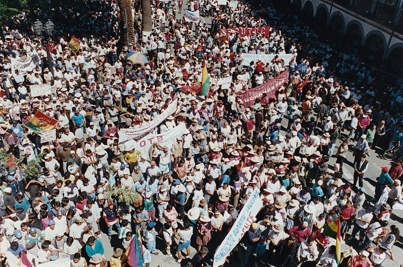
2000
Guerra del Agua — Cochabamba
Eventos
2001
Ley 2235 del Diálogo Nacional 2000 (HIPC II)
Leyes
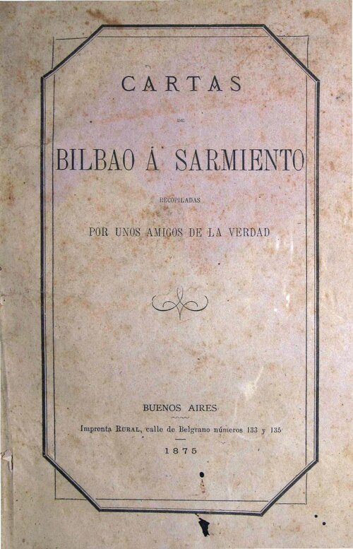
2001
DS 26462 — Estrategia Boliviana de Reducción de Pobreza (EBRP)
Programas
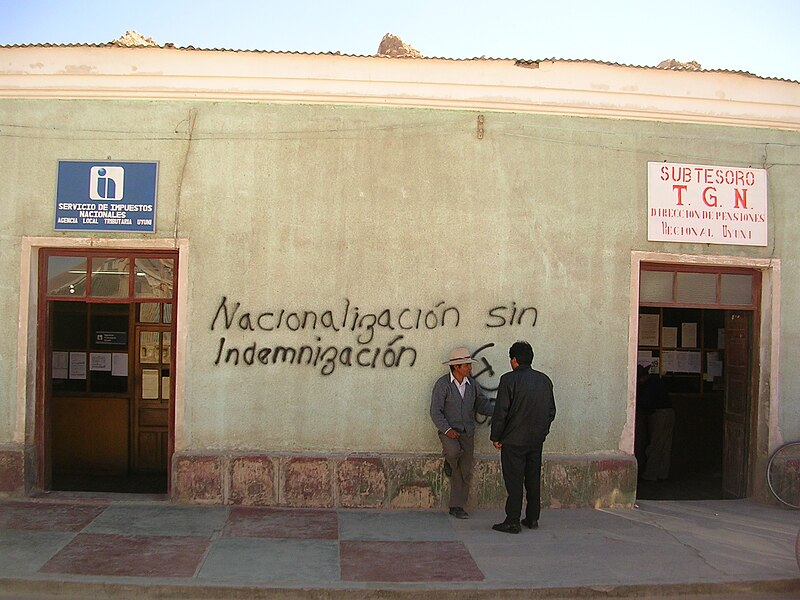
2003
Guerra del Gas — caída de Sánchez de Lozada
Eventos
2004
Referéndum del Gas
Eventos
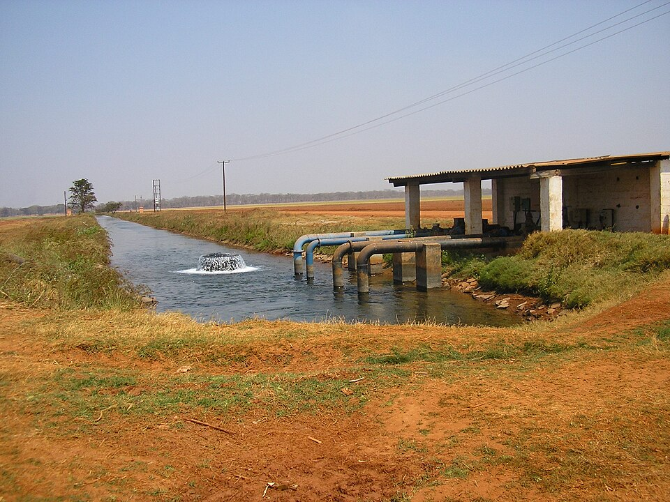
2004
Ley 2878 — Promoción y Apoyo al Riego
Leyes
2005
Ley 3058 de Hidrocarburos — origen del IDH
Leyes

2005
Elecciones generales — triunfo del MAS
Eventos
2006–2019 · Era Morales · 27 hitos
2006
Era Evo Morales Ayma
Otros

2006
Posesión de Evo Morales y creación del MDRyT
Institucional
<img src=“figures/timeline_media/morales_2006_2019/hito_18.jpg” alt=“Plan Nacional de Desarrollo”“““““““““““““““““““““““““““““““““““““““““““““““““““““““““““““““““““““““““““““““““““““““““““““““““““““““““““““““““““““““““““““““Bolivia Digna, Soberana, Productiva”“““““““““““““““““““““““““““““““““““““““““““““““““““““““““““““““““““““““““““““““““““““““““““““““““““““““““““““““““““““““““““““““” loading=“lazy”>
2006
Plan Nacional de Desarrollo ““““““““““““““““““““““““““““““““““““““““““““““““““““““““““““““““““““““““““““““““““““““““““““““““““““““““““““““““““““““““““““““““Bolivia Digna, Soberana, Productiva”“““““““““““““““““““““““““““““““““““““““““““““““““““““““““““““““““““““““““““““““““““““““““““““““““““““““““““““““““““““““““““““““
Institucional
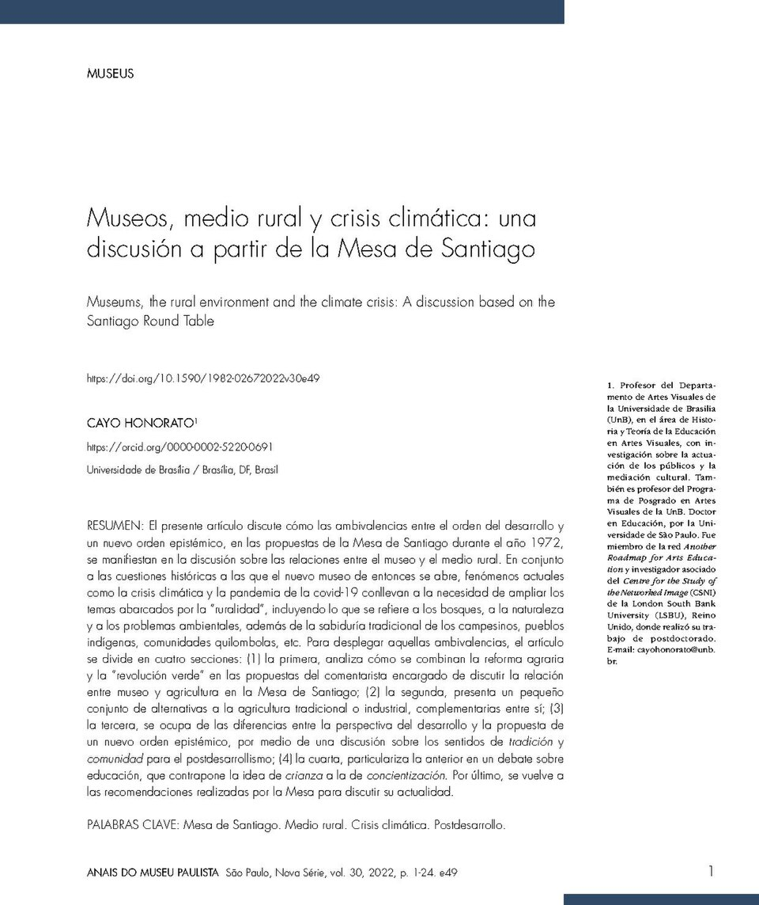
2006
Ley 3545 — Reconducción Comunitaria de la Reforma Agraria
Leyes
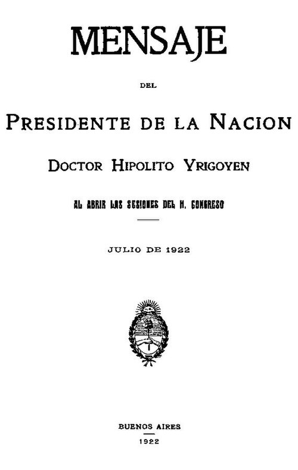
2007
Creación del Banco de Desarrollo Productivo (BDP)
Institucional
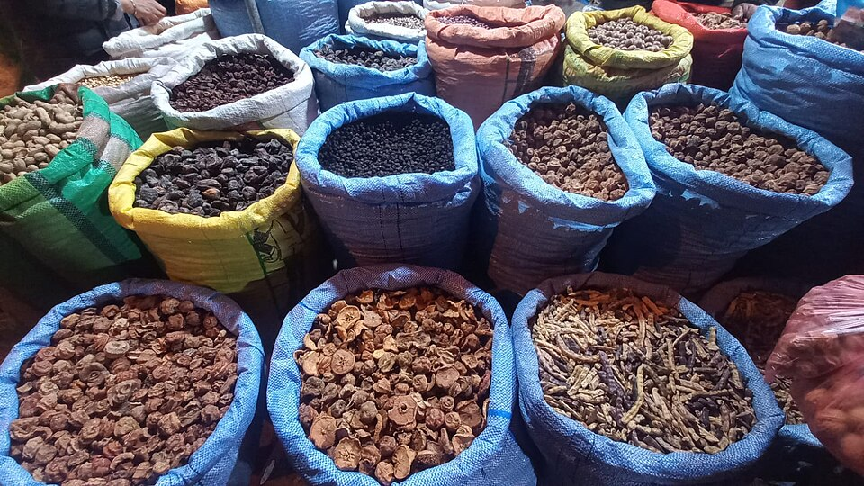
2007
DS 29230 — Creación de EMAPA
Institucional

2007
Ley 3791 — Renta Dignidad
Leyes
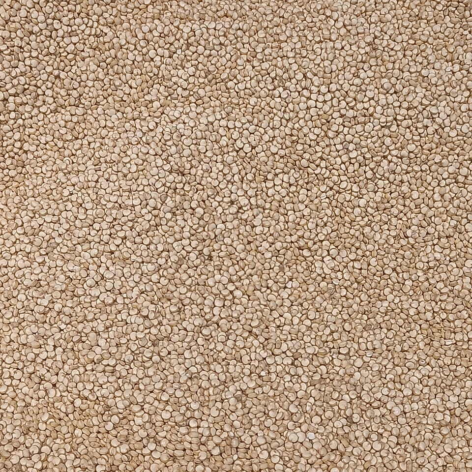
2008
DS 29611 — Creación del INIAF
Institucional
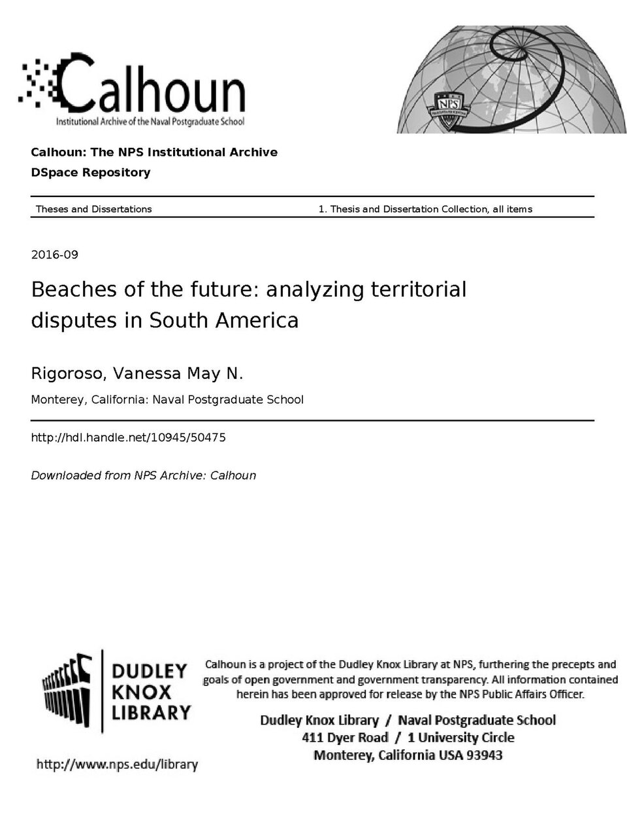
2009
Nueva Constitución Política del Estado — Soberanía Alimentaria
Leyes
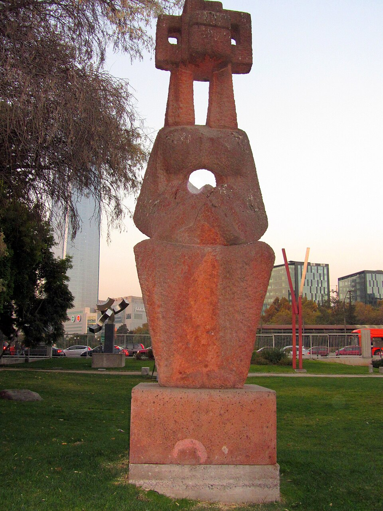
2010
Ley 071 — Derechos de la Madre Tierra
Leyes
2011
Programa Mi Agua / MIAGUA I-V
Programas

2011
Ley 144 — Revolución Productiva Comunitaria Agropecuaria
Leyes
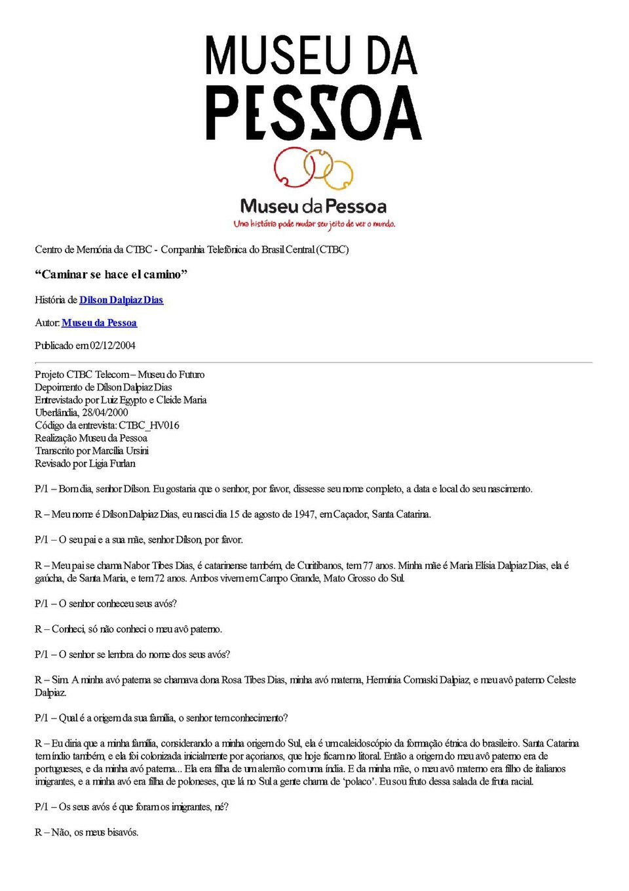
2011
Programa CRIAR — Apoyos Directos Agroalimentarios
Programas
2012
Ley 300 — Marco Madre Tierra y Desarrollo Integral
Leyes
2013
Ley 337 — Apoyo a la Producción de Alimentos y Restitución de Bosques
Leyes
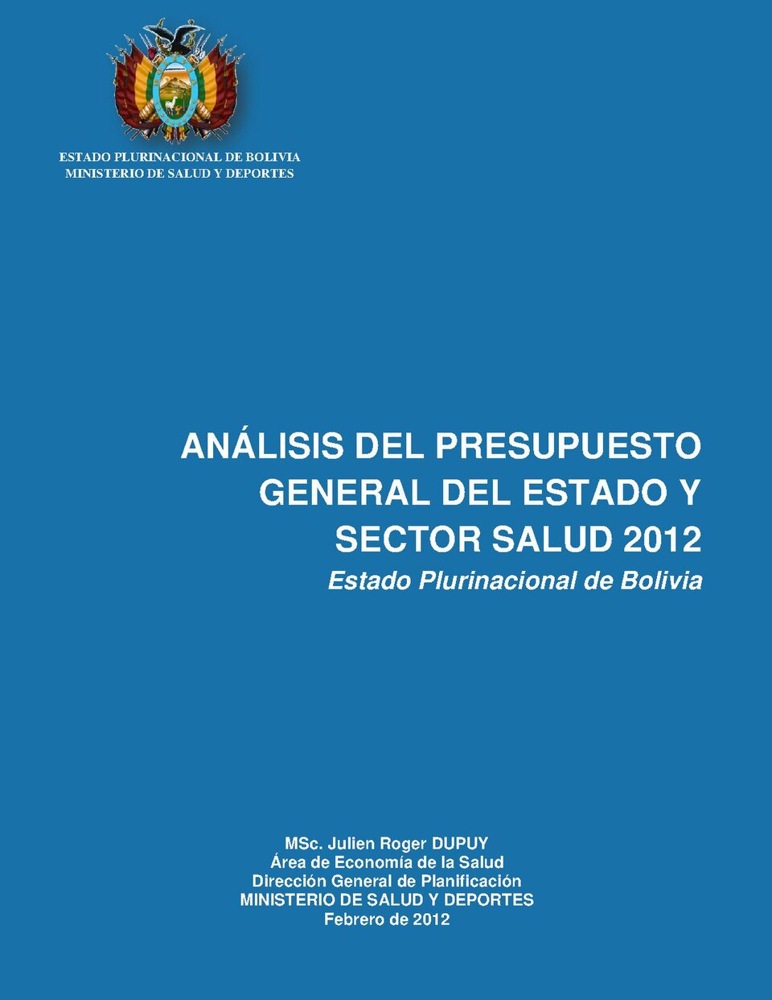
2013
Ley 393 — Servicios Financieros
Leyes
2013
Agenda Patriótica 2025 (13 Pilares)
Institucional
<img src=“figures/timeline_media/morales_2006_2019/hito_33.jpg” alt=“Plan del Sector Desarrollo Agropecuario”“““““““““““““““““““““““““““““““““““““““““““““““““““““““““““““““““““““““““““““““““““““““““““““““““““““““““““““““““““““““““““““““Revolución Rural y Agraria”““““““““““““““““““““““““““““““““““““““““““““““““““““““““““““““““““““““““““““““““““““““““““““““““““““““““““““““““““““““““““““““” (PSDA 2014-2018)” loading=“lazy”>
2014
Plan del Sector Desarrollo Agropecuario ““““““““““““““““““““““““““““““““““““““““““““““““““““““““““““““““““““““““““““““““““““““““““““““““““““““““““““““““““““““““““““““““Revolución Rural y Agraria”““““““““““““““““““““““““““““““““““““““““““““““““““““““““““““““““““““““““““““““““““““““““““““““““““““““““““““““““““““““““““““““” (PSDA 2014-2018)
Institucional
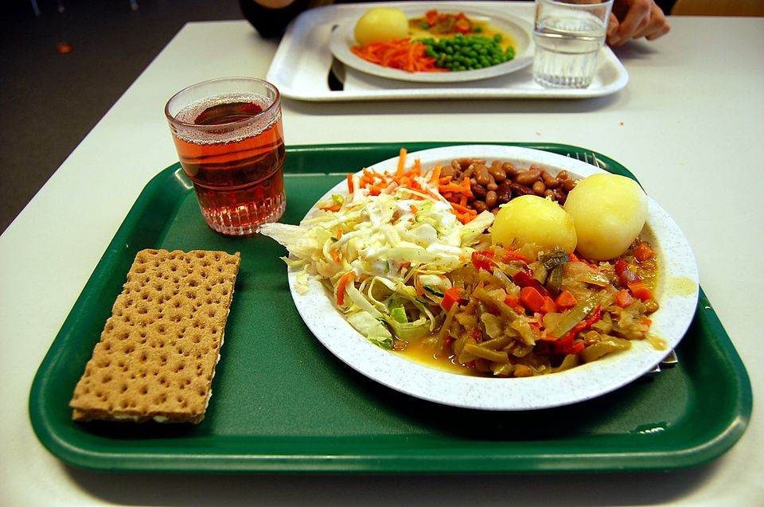
2014
Ley 622 — Alimentación Escolar
Leyes
<img src=“figures/timeline_media/morales_2006_2019/hito_35.jpg” alt=“Cumbre Agropecuaria”“““““““““““““““““““““““““““““““““““““““““““““““““““““““““““““““““““““““““““““““““““““““““““““““““““““““““““““““““““““““““““““““Sembrando Bolivia”“““““““““““““““““““““““““““““““““““““““““““““““““““““““““““““““““““““““““““““““““““““““““““““““““““““““““““““““““““““““““““““““” loading=“lazy”>
2015
Cumbre Agropecuaria ““““““““““““““““““““““““““““““““““““““““““““““““““““““““““““““““““““““““““““““““““““““““““““““““““““““““““““““““““““““““““““““““Sembrando Bolivia”“““““““““““““““““““““““““““““““““““““““““““““““““““““““““““““““““““““““““““““““““““““““““““““““““““““““““““““““““““““““““““““““
Eventos

2015
Ley 741 — Desmonte hasta 20 ha
Leyes
2016
PSARDI — Plan del Sector Agropecuario y Rural con Desarrollo Integral
Institucional
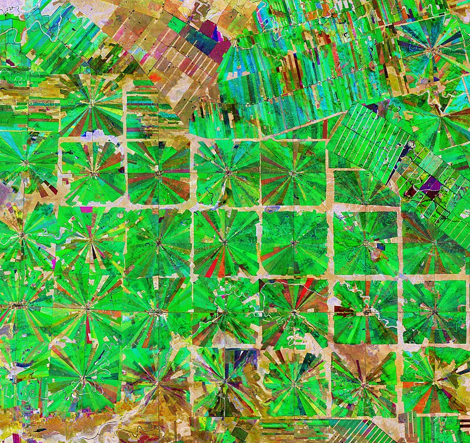
2019
DS 3973 — Ampliación del chaqueo en Santa Cruz y Beni
Leyes
2019
Incendios masivos en la Chiquitania
Eventos

2019
Crisis política y renuncia de Evo Morales
Eventos
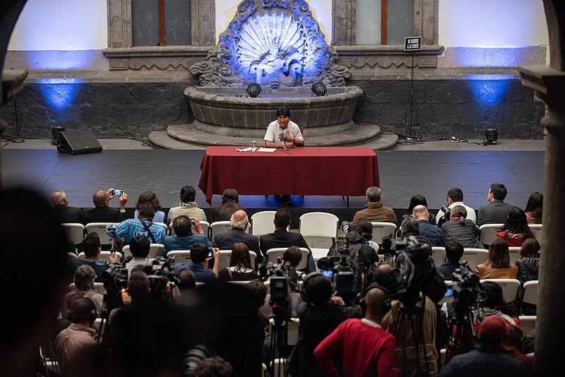
2019
Crisis política post-electoral y gobierno transitorio
Eventos
2019
Áñez asume presidencia interina
Institucional
2019–2025 · Áñez + Arce · 19 hitos
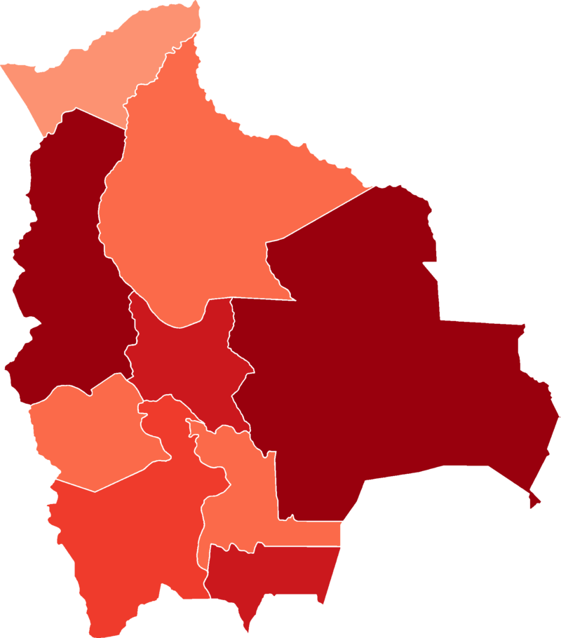
2020
Cuarentena COVID-19 y primeros decretos sectoriales
Eventos

2020
DS 4232 — Apertura OGM de emergencia
Leyes

2020
Elecciones 2020 — Arce gana en primera vuelta
Eventos
2020
Posesión Luis Arce — fin de la transición
Institucional

2020
Ley 1357 — Impuesto a las Grandes Fortunas (IGF)
Leyes
2021
DS 4497 — reversión de la vía abreviada OGM
Leyes
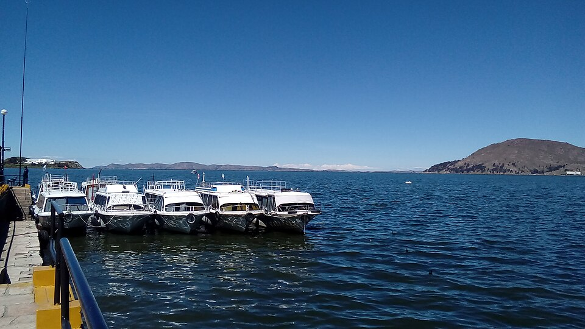
2021
DS 4632 — Programa Nacional Pesca y Acuicultura 2022-2025
Leyes
2022
PAR III aprobado por el Banco Mundial
Programas
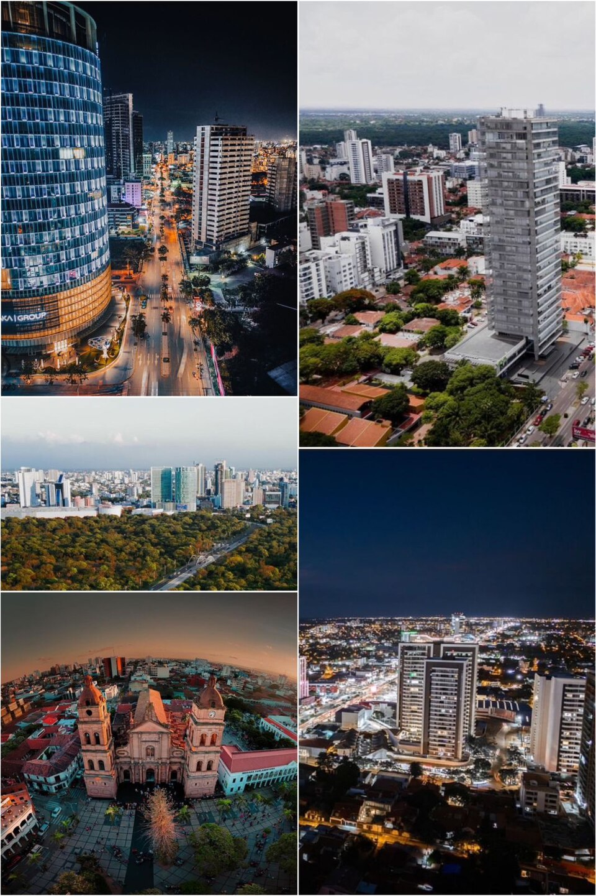
2022
Paro cívico de Santa Cruz por el Censo (36 días)
Eventos
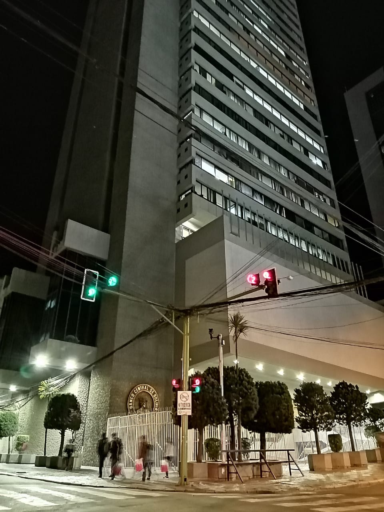
2023
Crisis de divisas y dólar paralelo
Externo
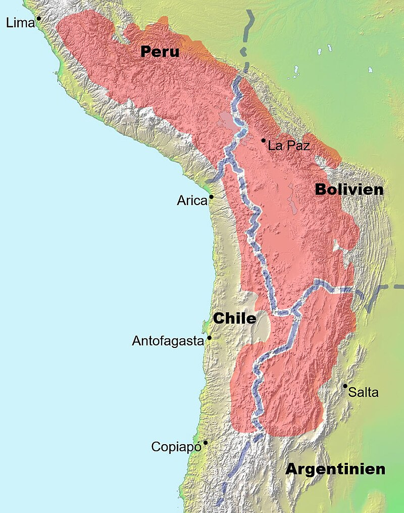
2023
Sequía severa 2023 en el Altiplano y Chaco
Externo

2023
Política de Biocombustibles — planta El Alto
Programas

2023
Ley 1546 — Presupuesto 2024
Leyes
2024
Escasez de combustibles — impacto en siembra/cosecha
Externo
2024
Censo Nacional 2024
Institucional

2024
Incendios forestales masivos — 10 M ha quemadas
Externo

2024
RPC MDRyT 2024 — ejecución física 54%, financiera 74%
Institucional

2025
Elecciones generales 2025 — primera vuelta
Eventos
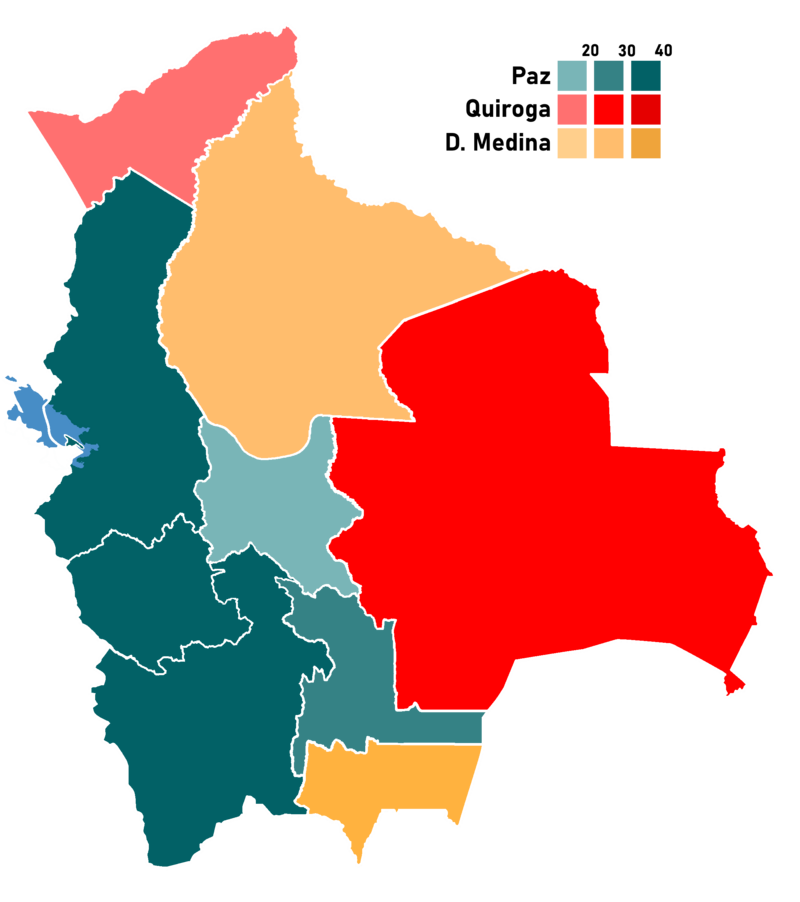
2025
Balotaje 2025 — nuevo gobierno
Eventos
Listado completo
Pre-MAS · 1990–2005
| Año | Hito | Grupo |
|---|---|---|
| 1991-03 | Ley 1178 SAFCO — administración y control gubernamental | Leyes |
| 1992-04 | Ley 1333 del Medio Ambiente | Leyes |
| 1996-07 | Ley Forestal 1700 | Leyes |
| 1996-10 | Ley INRA 1715 — Reforma Agraria moderna | Leyes |
| 1997-04 | Ley 1770 de Arbitraje y Conciliación | Leyes |
| 2000-03 | Ley 2061 — creación del SENASAG | Institucional |
| 2000-04 | Guerra del Agua — Cochabamba | Eventos |
| 2001-07 | Ley 2235 del Diálogo Nacional 2000 (HIPC II) | Leyes |
| 2001-12 | DS 26462 — Estrategia Boliviana de Reducción de Pobreza (EBRP) | Programas |
| 2003-10 | Guerra del Gas — caída de Sánchez de Lozada | Eventos |
| 2004-07 | Referéndum del Gas | Eventos |
| 2004-10 | Ley 2878 — Promoción y Apoyo al Riego | Leyes |
| 2005-05 | Ley 3058 de Hidrocarburos — origen del IDH | Leyes |
| 2005-12 | Elecciones generales — triunfo del MAS | Eventos |
Era Morales · 2006–2019
| Año | Hito | Grupo |
|---|---|---|
| 2006-01 | Era Evo Morales Ayma | |
| 2006-01 | Posesión de Evo Morales y creación del MDRyT | Institucional |
| 2006-06 | Plan Nacional de Desarrollo """"""""""""""""""""""""""""""""""""""""""""""""""""""""""""""""""""""""""""""""""""""""""""""""""""""""""""""""""""""""""""""""Bolivia Digna, Soberana, Productiva"""""""""""""""""""""""""""""""""""""""""""""""""""""""""""""""""""""""""""""""""""""""""""""""""""""""""""""""""""""""""""""""" | Institucional |
| 2006-11 | Ley 3545 — Reconducción Comunitaria de la Reforma Agraria | Leyes |
| 2007-01 | Creación del Banco de Desarrollo Productivo (BDP) | Institucional |
| 2007-08 | DS 29230 — Creación de EMAPA | Institucional |
| 2007-11 | Ley 3791 — Renta Dignidad | Leyes |
| 2008-06 | DS 29611 — Creación del INIAF | Institucional |
| 2009-02 | Nueva Constitución Política del Estado — Soberanía Alimentaria | Leyes |
| 2010-12 | Ley 071 — Derechos de la Madre Tierra | Leyes |
| 2011-06 | Programa Mi Agua / MIAGUA I-V | Programas |
| 2011-06 | Ley 144 — Revolución Productiva Comunitaria Agropecuaria | Leyes |
| 2011-11 | Programa CRIAR — Apoyos Directos Agroalimentarios | Programas |
| 2012-10 | Ley 300 — Marco Madre Tierra y Desarrollo Integral | Leyes |
| 2013-01 | Ley 337 — Apoyo a la Producción de Alimentos y Restitución de Bosques | Leyes |
| 2013-08 | Ley 393 — Servicios Financieros | Leyes |
| 2013-12 | Agenda Patriótica 2025 (13 Pilares) | Institucional |
| 2014-06 | Plan del Sector Desarrollo Agropecuario """"""""""""""""""""""""""""""""""""""""""""""""""""""""""""""""""""""""""""""""""""""""""""""""""""""""""""""""""""""""""""""""Revolución Rural y Agraria"""""""""""""""""""""""""""""""""""""""""""""""""""""""""""""""""""""""""""""""""""""""""""""""""""""""""""""""""""""""""""""""" (PSDA 2014-2018) | Institucional |
| 2014-12 | Ley 622 — Alimentación Escolar | Leyes |
| 2015-04 | Cumbre Agropecuaria """"""""""""""""""""""""""""""""""""""""""""""""""""""""""""""""""""""""""""""""""""""""""""""""""""""""""""""""""""""""""""""""Sembrando Bolivia"""""""""""""""""""""""""""""""""""""""""""""""""""""""""""""""""""""""""""""""""""""""""""""""""""""""""""""""""""""""""""""""" | Eventos |
| 2015-09 | Ley 741 — Desmonte hasta 20 ha | Leyes |
| 2016-12 | PSARDI — Plan del Sector Agropecuario y Rural con Desarrollo Integral | Institucional |
| 2019-07 | DS 3973 — Ampliación del chaqueo en Santa Cruz y Beni | Leyes |
| 2019-08 | Incendios masivos en la Chiquitania | Eventos |
| 2019-10 | Crisis política y renuncia de Evo Morales | Eventos |
| 2019-11 | Crisis política post-electoral y gobierno transitorio | Eventos |
| 2019-11 | Áñez asume presidencia interina | Institucional |
Áñez + Arce · 2019–2025
| Año | Hito | Grupo |
|---|---|---|
| 2020-03 | Cuarentena COVID-19 y primeros decretos sectoriales | Eventos |
| 2020-05 | DS 4232 — Apertura OGM de emergencia | Leyes |
| 2020-10 | Elecciones 2020 — Arce gana en primera vuelta | Eventos |
| 2020-11 | Posesión Luis Arce — fin de la transición | Institucional |
| 2020-12 | Ley 1357 — Impuesto a las Grandes Fortunas (IGF) | Leyes |
| 2021-03 | DS 4497 — reversión de la vía abreviada OGM | Leyes |
| 2021-12 | DS 4632 — Programa Nacional Pesca y Acuicultura 2022-2025 | Leyes |
| 2022-06 | PAR III aprobado por el Banco Mundial | Programas |
| 2022-10 | Paro cívico de Santa Cruz por el Censo (36 días) | Eventos |
| 2023-01 | Crisis de divisas y dólar paralelo | Externo |
| 2023-03 | Sequía severa 2023 en el Altiplano y Chaco | Externo |
| 2023-06 | Política de Biocombustibles — planta El Alto | Programas |
| 2023-12 | Ley 1546 — Presupuesto 2024 | Leyes |
| 2024-01 | Escasez de combustibles — impacto en siembra/cosecha | Externo |
| 2024-03 | Censo Nacional 2024 | Institucional |
| 2024-08 | Incendios forestales masivos — 10 M ha quemadas | Externo |
| 2024-12 | RPC MDRyT 2024 — ejecución física 54%, financiera 74% | Institucional |
| 2025-08 | Elecciones generales 2025 — primera vuelta | Eventos |
| 2025-10 | Balotaje 2025 — nuevo gobierno | Eventos |
Cómo se construyó
Cada hito cumple al menos uno de estos criterios:
- Instrumento legal: ley o decreto supremo del sector.
- Programa emblemático: presupuesto ≥ USD 10 M o impacto ≥ 10 000 beneficiarios.
- Evento externo: shock con impacto ≥ 1 % del PIB agropecuario.
- Acuerdo / cumbre: que produjo decisiones vinculantes.
Cada hito tiene fecha exacta, fuente primaria (Gaceta Oficial / Lexivox / FAOLEX), al menos una fuente secundaria (medio o think tank), descripción contextual de 150–300 palabras y vínculo al panel cuantitativo del estudio.
Recursos descargables
Timeline CSV (formato KnightLab) Timeline JSON (embed nativo) Vista previa simplificada (CSV) Fuentes detalladas en GitHub